One pass Three countries Every match
Karibu,
pamoja.
/ Welcome, together — your AFCON 2027 fan pass
Match access, travel and city services on one digital pass. Pamoja never holds your money — every payment is a direct hand-off.
One Pass. Five doors.
Pamoja never holds funds — every payment is a direct hand-off to the merchant, seller or airline.
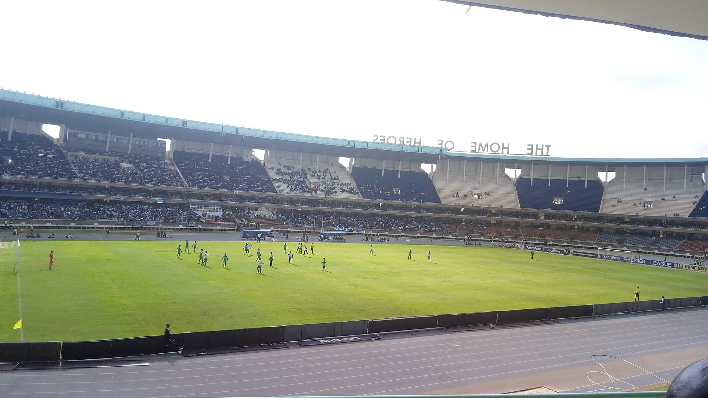
Next at Kasarani · Group A · Matchday 2
Kenya v Mali
Sat 26 Jun · Kick-off 16:00 EAT · Gates open 14:00
All fixtures
Fan events and promotions
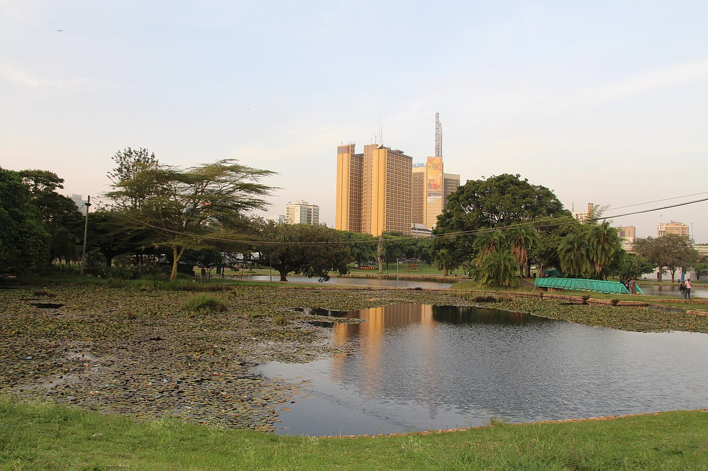
Opening Fan Festival
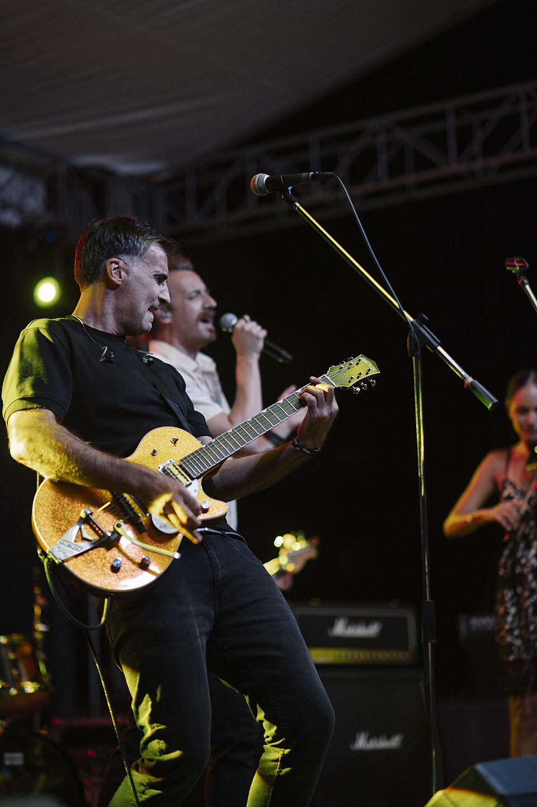
Bongo Flava Live
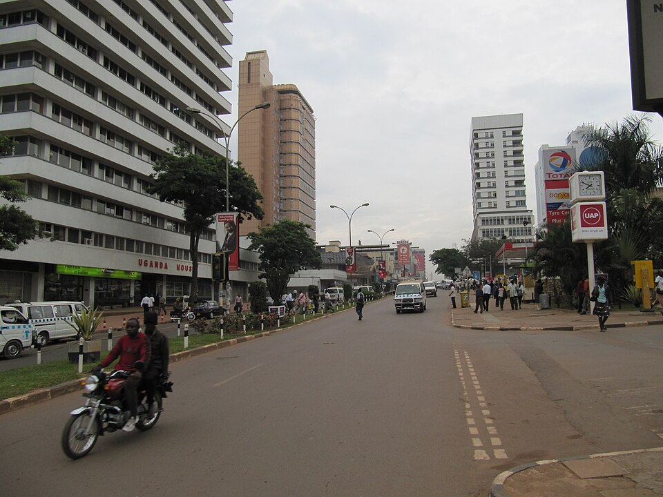
Kampala Fan Parade & Concert
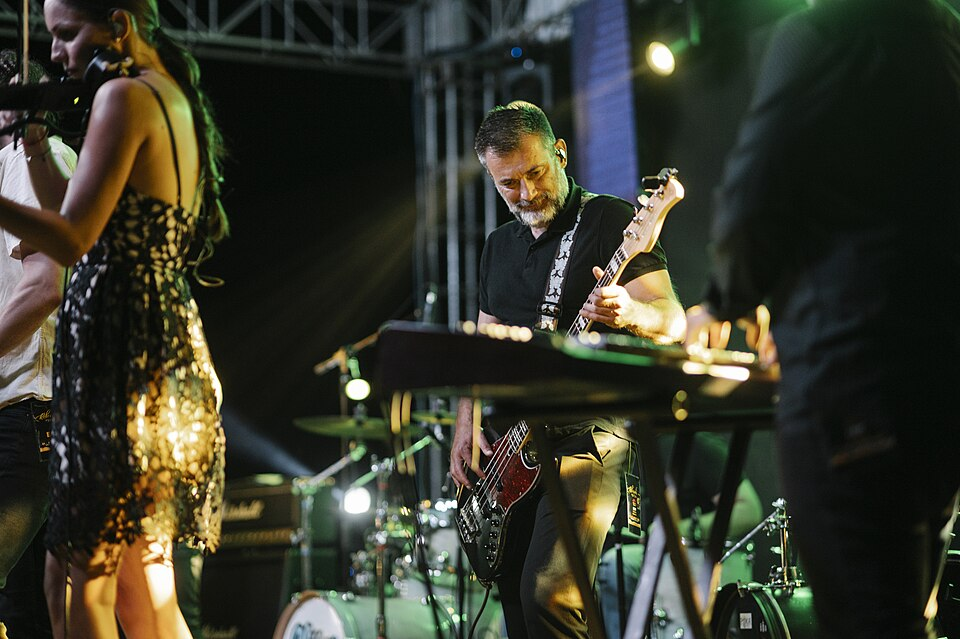
Koroga Festival · AFCON Edition
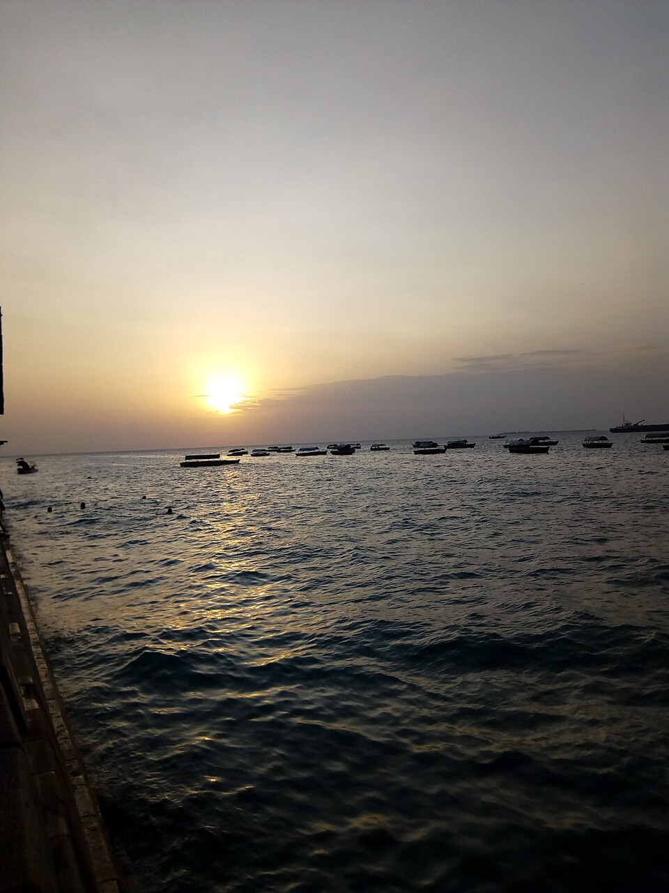
Zanzibar Beach Fan Fest
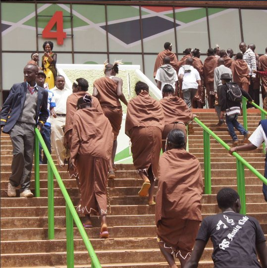
Closing Concert
Line-up as of 19 Aug 2026 · prototype listings — confirm before you plan.
Explore the host country
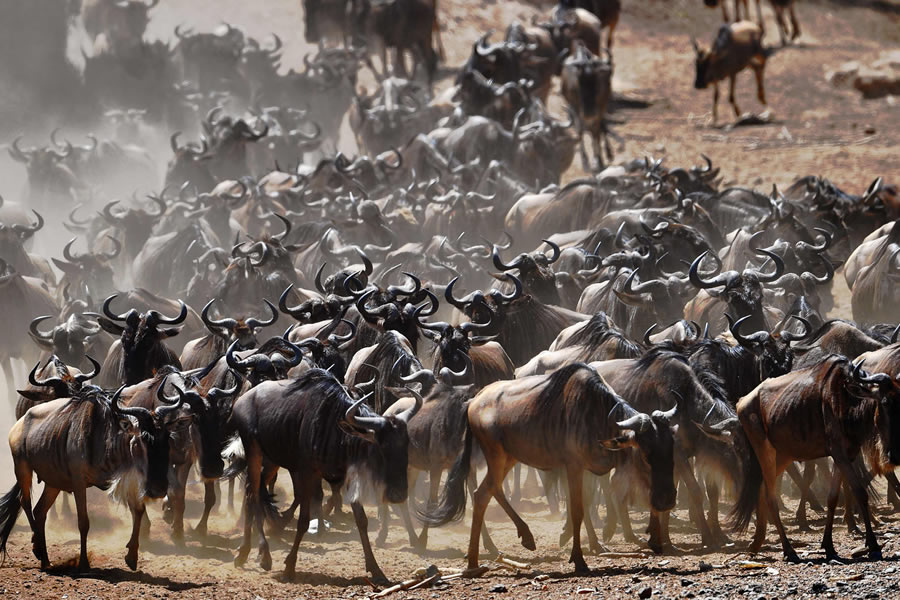
Maasai Mara
The Great Migration runs right through the group stage.
Mount Kenya
Batian, Nelion, the Gate of the Mists
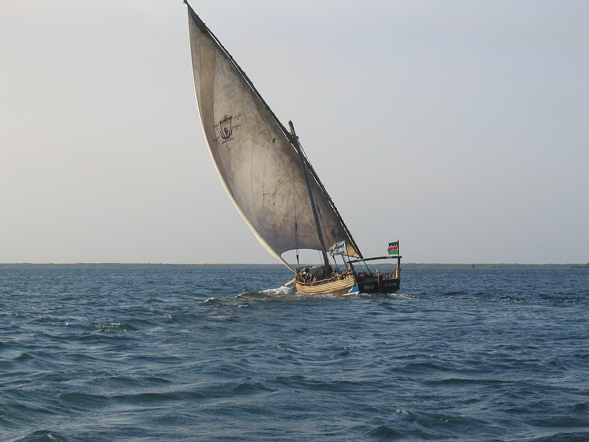
Lamu Old Town
700 years of Swahili dhow country
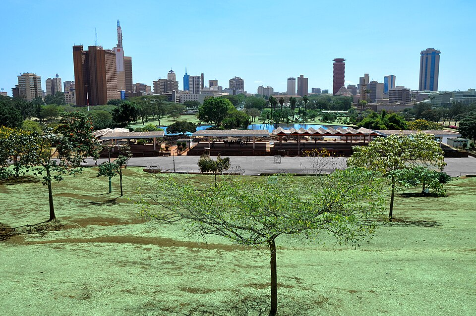
Nairobi
The only capital with a national park
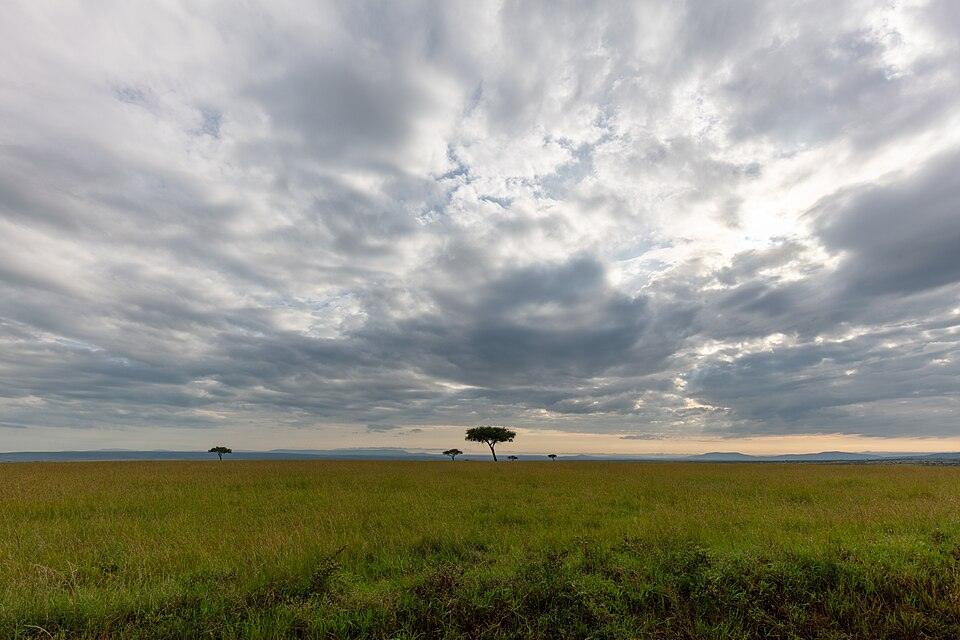
Mara Conservancies
Quiet plains beyond the reserve
With an active Pass
2,189
Partner discounts across three countries
Show your Pass, pay the merchant directly, and the discount is yours — Pamoja only writes the record line on your device.
Browse partnersPrototype figures · Pamoja never holds funds.
Issued in under 3 minutes · no payment details needed
Own the tournament.
One pass, three countries, every match you can reach. Set it up before you fly and land ready.